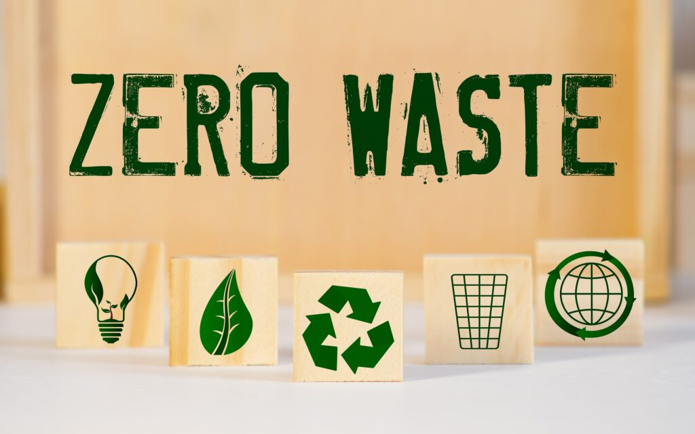

SELL ZERO-WASTE PRODUCTS

- Starting a zero-waste grocery store is an excellent way to impact the environment positively. Reducing single-use plastic packaging and food waste can help you decrease your store’s contribution to landfills, reduce pollution and attract environmentally-conscious consumers.
- Whether you want to open a new zero-waste grocery store or transition your current shop to a zero-waste grocery store, understanding how to accomplish this effectively can increase your success.
- Zero-waste supermarkets conserve natural resources and reduce pollution. Single-use products such as food packaging waste resources and pollute the environment.
- A no-waste grocery store combats single-use product usage by eliminating plastic food packaging, which reduces the number of plastic items accumulating in landfills. This sustainable shopping solution also conserves natural resources by repurposing food waste such as animal by-products.
- Eliminating plastic packaging also encourages consumers to reduce food waste. By purchasing unpackaged produce, consumers can buy smaller amounts of fruit and vegetables, allowing them to take only what they need and decrease the amount of food they waste at home.
HOW TO START A ZERO-WASTE GROCERY STORE
RESOURCE CONSERVATION
- Starting a zero-waste grocery store can help protect the environment and climate from harmful greenhouse gases. Plastic packaging materials and processed food emit greenhouse gases into the atmosphere, and these gases can negatively affect global climate patterns. Eliminating or reducing plastic packaging items and repurposing animal by-products helps to reduce the greenhouse gases released into the atmosphere.
- While opening one zero-waste grocery store may seem like a small change in the larger grocery industry scope, it can lead to larger advancements.
- Each zero-waste grocery store that opens reduces the amount of single-use items manufacturers need to produce, decreasing demand for these items. As demand decreases, production decreases, too.
- Starting a zero-waste grocery store can also inspire other shop owners or grocery chains to follow the example and take the same positive measures.
- Zero-waste grocery stores attract environmentally conscious consumers. These individuals make efforts to reduce waste, and they often support businesses that make similar efforts. Zero-waste grocery shopping allows consumers to make a difference, and many individuals appreciate the opportunity to do so.
- Sustainably minded shoppers often seek supermarkets that take positive actions to reduce their carbon footprint, so you can attract more customers by opening or transitioning to a zero-waste grocery store.